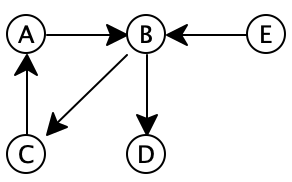

Lecture 30: Breadth-first search and Depth-first search on graphs
Finding paths from one node to another
Finding a route from one location to another is a fundamental question in everyday life, and it shows up in many forms, from explicit questions (“Can you give me directions to get to the library from here?”, or “What prerequisites must I take in order to qualify for this class?”), to more abstract problems (e.g., tracing the spread of a meme going viral). Often the goal is not merely to find a route, but to find the shortest route from one place to another.
30.1 Primer: graphs
-
A social graph tracks relationships (the edges) between people (the vertices)
-
A road network tracks roads (the edges) between places (the vertices)
-
A airline network tracks flights (the edges) between cities (the vertices)
-
A curriculum dependency graph tracks prerequsites (the edges) between courses (the vertices)
-
While friendships are usually mutual, one person might have a crush on another that isn’t reciprocated.
-
One-way roads allow travel in one direction only, by definition!
-
A direct flight from one city to another does not necessarily imply there is also a direct return flight.
-
Actually, when a graph claims to be a dependency graph, but contains a cycle (or mutual dependency), problems typically arise. The algorithms we discuss today will work fine in the presence of cycles, but other algorithms might not.
Dependency graphs imply a “comes-before” relationship: you must take Fundies 2 before taking Algorithms, for example. It would be very problematic to claim that Algorithms depends on Fundies 2...and Fundies 2 likewise depends on Algorithms!
Do Now!
Which is more general: directed graphs or undirected graphs?
-
Social graphs are unweighted: either a friendship exists or it does not.
-
Road networks are weighted: recording the distance between places.
-
Airline networks are weighted: they might record the price of a ticket, or the distance of the flight, or some other cost.
-
A curriculum dependency graph is unweighted: each course is either a prerequisite or it is not.
Do Now!
Which is more general: weighted graphs or unweighted graphs?
30.1.1 Representing graphs
How might we choose to represent graphs? One possibility is to record a graph as an ArrayList<ArrayList<weight>>, where weight is whatever kind of weights we need (for our purposes, usually Integers), and the entry graph.get(i).get(j) gives the weight of connecting vertex \(i\) to vertex \(j\). Of course, not all vertices are connected to all other vertices, so we would need an “invalid” value to mark those cases: we might choose to use null for this. This representation is called the adjacency matrix representation, and it’s pretty convenient when almost every node is connected to almost every other node. It does have the drawback that we have to manually check for null all the time, and it also has the drawback that we can’t store any additional information about vertices, since we’re representing vertices merely as an index in the ArrayLists.
class Vertex { ... any data about vertices, such as people's names, or place's GPS coordinates ... IList<Edge> outEdges; // edges from this node } class Edge { Vertex from; Vertex to; int weight; } class Graph { IList<Vertex> allVertices; }
Do Now!
Design a method for Graph to collect all the edges in the graph.
Do Now!
In the adjacency-matrix representation, we could find all the vertices reachable from a given vertex by looking in a row of the matrix, and we could find all the vertices that reach a given vertex by looking in a column of the matrix. (Why?) In the adjacency-list representation, we can easily find all the vertices reachable from a given vertex: it’s simply the outEdges field. Design a method inEdges on Graph that computes the list of vertices that reach the given vertex.
30.1.2 Aside: Describing the performance of graph algorithms
Do Now!
Using big-\(O\) notation, how many edges can there be in a graph, as a function of the number of vertices? Using big-\(\Omega\), how few edges could there be in a graph? How few edges might there be if every vertex is connected?
We can also use these parameters to compare the two representations above, in terms of memory usage. For example, the memory requirements for the adjacency-matrix representation are \(O(V^2)\), because there is an entry in the matrix for every pair of vertices, regardless of how many edges there are. In contrast, the adjacency-list representation uses \(O(V + E)\) memory, because we allocate one Edge object for each edge, one ConsList object for each edge, and one Vertex object for each vertex. When \(E < V^2\), this representation is more memory-efficient.
30.2 Diving deep: Finding any path between two vertices via depth-first search
Do Now!
How can we tell when two vertices of the graph are “the same”? Which notion of equality is most appropriate here?
// In Vertex boolean hasPathTo(Vertex dest) { for (Edge e : this.outEdges) { if ( e.to == dest // can get there in just one step || e.to.hasPathTo(dest)) { // can get there on a path through e.to return true; } } return false; }
Do Now!
Why can we not just simplify the if statement to return (e.to == dest) || e.to.hasPathTo(dest)?
Do Now!
Will this code always work? Give an explanation of why, or an example graph that breaks it.
But we’re no longer dealing with ancestry trees —

Do Now!
Implement this strategy for Vertex.
// In Graph boolean hasPathBetween(Vertex from, Vertex to) { ... }
// In Graph boolean hasPathBetween(Vertex from, Vertex to) { Deque<Vertex> alreadySeen = new Deque<Vertex>(); Deque<Vertex> worklist = new Deque<Vertex>(); ... }
// In Graph boolean hasPathBetween(Vertex from, Vertex to) { Deque<Vertex> alreadySeen = new Deque<Vertex>(); Deque<Vertex> worklist = new Deque<Vertex>(); // Initialize the worklist with the from vertex ...add from into worklist... // As long as the worklist isn't empty... while (!worklist.isEmpty()) { Vertex next = ...get (and remove) the next item off the worklist... if (next.equals(to)) { return true; // Success! } else if (alreadySeen.contains(next)) { // do nothing: we've already seen this one } else { ...next is a vertex we haven't seen yet: process it... } } // We haven't found the to vertex, and there are no more to try return false; }
// In Graph boolean hasPathBetween(Vertex from, Vertex to) { Deque<Vertex> alreadySeen = new Deque<Vertex>(); Deque<Vertex> worklist = new Deque<Vertex>(); // Initialize the worklist with the from vertex worklist.addAtHead(from); // As long as the worklist isn't empty... while (!worklist.isEmpty()) { Vertex next = worklist.removeFromHead(); if (next.equals(to)) { return true; // Success! } else if (alreadySeen.contains(next)) { // do nothing: we've already seen this one } else { // add all the neighbors of next to the worklist for further processing for (Edge e : next.outEdges) { worklist.addAtHead(e.to); } // add next to alreadySeen, since we're done with it alreadySeen.addAtHead(next); } } // We haven't found the to vertex, and there are no more to try return false; }
-
The worklist starts off as [], and alreadySeen is also [].
worklist: [], alreadySeen: []
-
We add B to the worklist.
worklist: [B], alreadySeen: []
-
We start the while loop. Since the worklist isn’t empty, we remove the first item from it and assign it to next.
worklist: [], alreadySeen: [], next: B
-
Since next isn’t node E, and since alreadySeen does not contain it, we get to the else case, and add each of B’s neighbors (namely C and D) to the front of the worklist.
worklist: [D, C], alreadySeen: [B]Do Now!
Why are C and D “backwards” in the worklist? -
We return to the start of the while loop. Since the worklist isn’t empty, we remove the first item from it and assign it to next.
worklist: [C], alreadySeen: [B], next: D
-
Since next isn’t node E, and since alreadySeen does not contain it, we get to the else case, and add each of D’s neighbors (of which there are none) to the front of the worklist.
worklist: [C], alreadySeen: [D, B]
-
We return to the start of the while loop. Since the worklist isn’t empty, we remove the first item from it and assign it to next.
worklist: [], alreadySeen: [D, B], next: C
-
Since next isn’t node E, and since alreadySeen does not contain it, we get to the else case, and add each of C’s neighbors (namely A) to the front of the worklist.
worklist: [A], alreadySeen: [C, D, B]
-
We return to the start of the while loop. Since the worklist isn’t empty, we remove the first item from it and assign it to next.
worklist: [], alreadySeen: [C, D, B], next: A
-
Since next isn’t node E, and since alreadySeen does not contain it, we get to the else case, and add each of A’s neighbors (namely B) to the front of the worklist.
worklist: [B], alreadySeen: [A, C, D, B]
-
We return to the start of the while loop. Since the worklist isn’t empty, we remove the first item from it and assign it to next.
worklist: [], alreadySeen: [A, C, D, B], next: B
-
Since next isn’t node E, but since alreadySeen now does contain it, we do nothing, and silently discard node B again.
worklist: [], alreadySeen: [A, C, D, B]
-
We return to the start of the while loop. Now the worklist is empty, so we exit the loop, and return false.
Do Now!
Trace through the evaluation of this method, trying to find a path between A and C. Which nodes, if any, are left over in the worklist?
This algorithm descends deeply into the graph, going as far as it can following edges out from a single node before it reaches a cycle. Accordingly, it is known as depth-first search (or DFS).
Do Now!
What is its runtime?
The best-case scenario is that the starting and ending nodes are one and the same, and the algorithm finishes instantly, in \(\Omega(1)\) time and space. This case isn’t very interesting; it’s exceedingly unlikely that this occurs. So what is the worst-case behavior? Following the idiom that “it’s always the last place you look”, the worst-case behavior means that we have to examine every single edge and node before finding the one we want. Accordingly, the algorithm seems to take \(O(V + E)\) time to run. But our analysis was too glib: we didn’t quite count the cost of the loop body correctly. In particular, alreadySeen.contains(next) could itself take \(O(V)\) time to run, since it’s a simple Deque whose cost of searching is linear in its length. So the actual runtime here is \(O(V^2 + E)\), which is simply \(O(V^2)\).
Exercise
This observation makes for a very simple improvement to this algorithm: instead of using a Deque, what other data structure could we use to improve this bottleneck? And how might we need to change our Vertex class to enable more efficient look-ups?
Exercise
Work out a graph for which this might happen. Hint: it has lots of edges.
30.3 Broadening horizons: Finding any path between two vertices via breadth-first search
In the algorithm above, we chose to process a vertex completely before backtracking and moving to one of its neighbors, and we implemented that by always adding new items to the worklist at the front, which is where we also removed items. What if we changed that choice, and added items to the back? Practically speaking, this changes exactly two lines of code (both calls to addAtHead become calls to addAtTail). But what effect does this change have on the algorithm?
By adding new nodes to the back of the worklist, we effectively make them “wait their turn”, so that previously-added nodes get processed first. This means that we will process the starting node first, then all of its neighbors, then all of their neighbors (that haven’t already been processed), then all nodes 3 edges away from the start (that haven’t already been processed), then all nodes 4 edges away, etc. Our search broadens outward from the start, rather than diving deeply into a single path. Accordingly, this is known as a breadth-first search (or BFS).
Because our Deque allows us to add items to the front or the back of the list in constant time, this change does not affect the runtime or memory usage of our algorithm at all.
30.4 Removing repetition
// Represents a mutable collection of items interface ICollection<T> { // Is this collection empty? boolean isEmpty(); // EFFECT: adds the item to the collection void add(T item); // Returns the first item of the collection // EFFECT: removes that first item T remove(); }
30.4.1 Stacks: Last-in, First-out
class Stack<T> implements ICollection<T> { Deque<T> contents; Stack() { this.contents = new Deque<T>(); } public boolean isEmpty() { return this.contents.isEmpty(); } public T remove() { return this.contents.removeFromHead(); } public void add(T item) { this.contents.addAtHead(item); } }
30.4.2 Queues: First-in, First-out
class Queue<T> implements ICollection<T> { Deque<T> contents; Queue() { this.contents = new Deque<T>(); } public boolean isEmpty() { return this.contents.isEmpty(); } public T remove() { return this.contents.removeFromHead(); } public void add(T item) { this.contents.addAtTail(item); // NOTE: Different from Stack! } }
30.4.3 Rewriting BFS and DFS
// In Graph boolean bfs(Vertex from, Vertex to) { return searchHelp(from, to, new Queue<Vertex>()); } boolean dfs(Vertex from, Vertex to) { return searchHelp(from, to, new Stack<Vertex>()); } boolean searchHelp(Vertex from, Vertex to, ICollection<Vertex> worklist) { Deque<Vertex> alreadySeen = new Deque<Vertex>(); // Initialize the worklist with the from vertex worklist.add(from); // As long as the worklist isn't empty... while (!worklist.isEmpty()) { Vertex next = worklist.remove(); if (next.equals(to)) { return true; // Success! } else if (alreadySeen.contains(next)) { // do nothing: we've already seen this one } else { // add all the neighbors of next to the worklist for further processing for (Edge e : next.outEdges) { worklist.add(e.to); } // add next to alreadySeen, since we're done with it alreadySeen.addAtHead(next); } } // We haven't found the to vertex, and there are no more to try return false; }
30.5 Computing the actual path
Exercise
Extend the code above so that instead of merely returning true, it returns a list of the vertices along the path from the source to the destination.